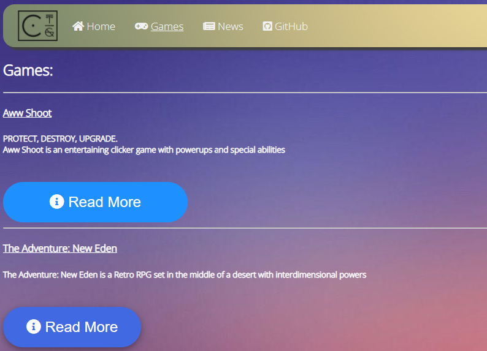

Home
Games
News
GitHub
Home
Games
News
GitHub
18th October, 2021
After a very, VERY long time, it has finally come: The UI Update!
This update adds some nice news features such as fade-in and button resize on hover!
This definitely makes the website look a lot cleaner!

An image showing the resize effect added in the update